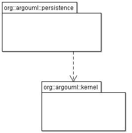

- Purpose
- To package and unpackage the persistence data from different subsystems to and from some storage medium, i.e. to save and load user data files.
- Located
org.argouml.persistence
- Layer
During save, the persistence subsystem requests each subsystem for its persistence data and adds that data to the output it is collating.
During load, the persistence subsystem unwraps the persistence data and passes them to the relevant subsystems for those subsystems to build themselves.
Edges and nodes are now saved and loaded in z order. Previously, edges were connected as they were loaded causing a problem if the node had not already been read. We now load all nodes and edges (unconnected) and then connect the edges post-load.
Design of the subsystem
Used subsystems
As illustrated in the figure below, the persistence subsystem depends on the kernel subsystem, and not vice versa.
